-
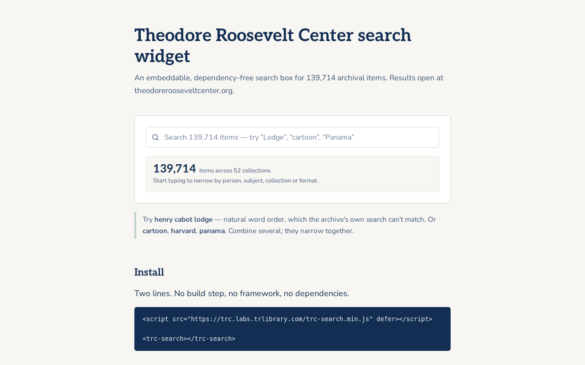
Embeddable Widget
TRC Search Widget
Instant autocomplete across 139,714 Theodore Roosevelt Center archival items, in one script tag.
Vanilla JS web componentsNode 18+esbuildd3-force -
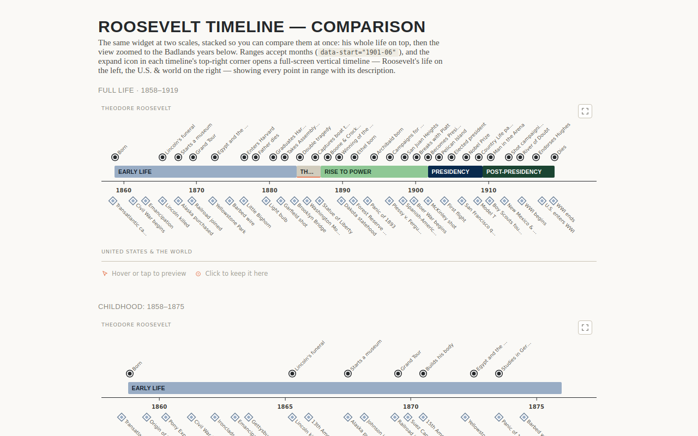
Interactive Media
TR Timeline
A single-file timeline that sets one life against the history happening around it.
Vanilla JS, zero dependenciesShadow DOMPlain JSON dataGitHub Actions -
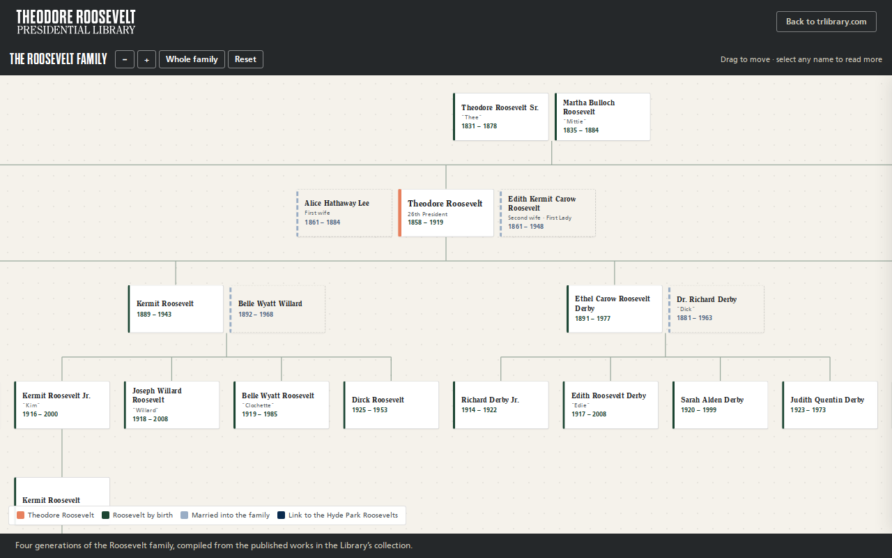
Interactive Media
Family Tree
Forty-six Roosevelts across six generations, every name opening a sourced biography.
Single self-contained vanilla JS fileShadow DOMGitHub Actions with headless verificationGitHub Pages -
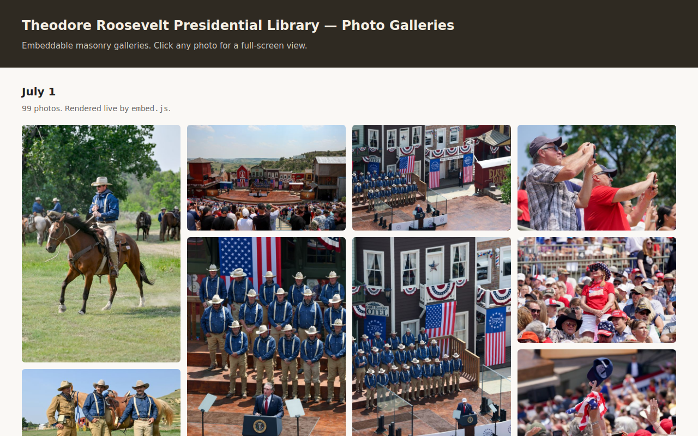
Embeddable Widget
Photo Gallery
Drop photos in a folder, run one script, embed a masonry gallery anywhere.
Python 3PillowVanilla JS embedGitHub Pages -

Content Tool
DAM Portal Embed
Turns a locked-in press portal into native, auto-sizing gallery tiles on your own page.
Vanilla JS embedNode 18+Acquia DAM / Widen portal APIGitHub Actions -

Data & Automation
Hours Embed
Republishes hours locked inside one CMS as a live embed on a completely different site.
Node ESM scraperschema.org JSON-LDVanilla JS with Shadow DOMGitHub Actions cron -
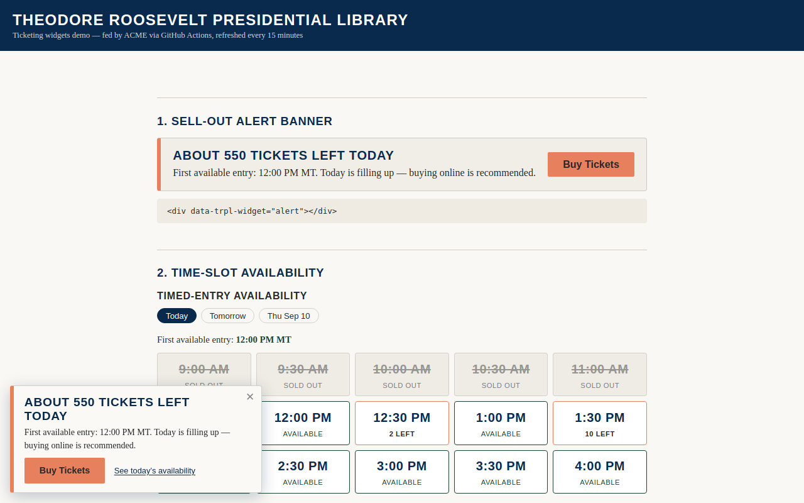
Dashboard
Ticketing Widgets
Live sell-out warnings and best-day-to-visit advice, refreshed every fifteen minutes.
Python 3 standard libraryACME Ticketing Reporting APIVanilla JS widgetsGitHub Actions -

Visitor Experience
Trip Planner
A wizard that turns a guest's interests into a routed, dated, printable itinerary.
Vanilla JS embedCurated JSON data filesNode ESM scrapers with PlaywrightPython image caching -
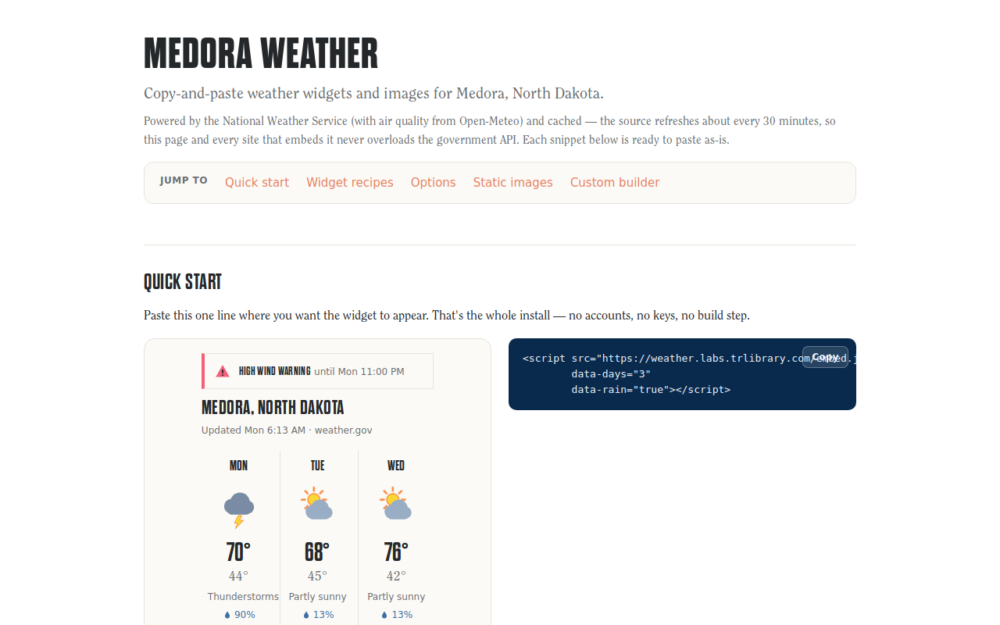
Embeddable Widget
Local Weather
Live local weather as a one-line embed, plus auto-refreshing forecast images for email.
Node.js ESMVanilla JS widgetSVG-to-PNG renderingapi.weather.gov -

Dashboard
Living Building Dashboard
A lobby display turning building performance into a living Badlands panorama.
Single-file HTML, CSS, vanilla JSInline SVGOpen-Meteo APIGitHub Actions -

Content Tool
Social Calendar
A shareable, read-only calendar of scheduled social posts, rebuilt twice a day.
PythonHootsuite REST API and OAuthImage compositingPlain HTML/CSS/JS -

Content Tool
Newsletter Builder
A browser newsletter builder that exports paste-ready HTML for your email platform.
Static HTML, CSS, JavaScriptNo backend, no build stepGitHub Pages -

Data & Automation
Link Checker
A weekly crawl that finds every broken link and typo across an entire website.
PythonrequestsGitHub Actions weekly cronGitHub Pages -
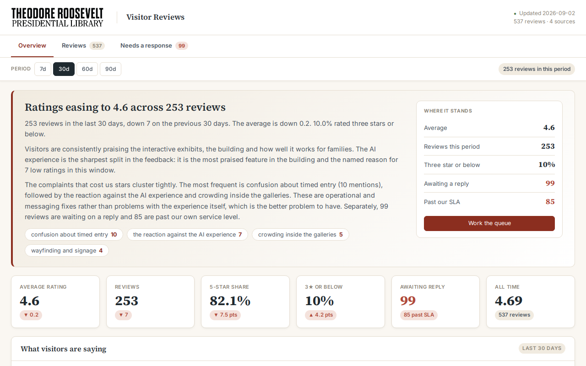
Dashboard
Reviews
Collects visitor reviews daily, classifies the themes, and triages what needs a reply.
PythonApify actorsSwappable LLM provider interfaceStatic HTML/CSS/JS dashboard -
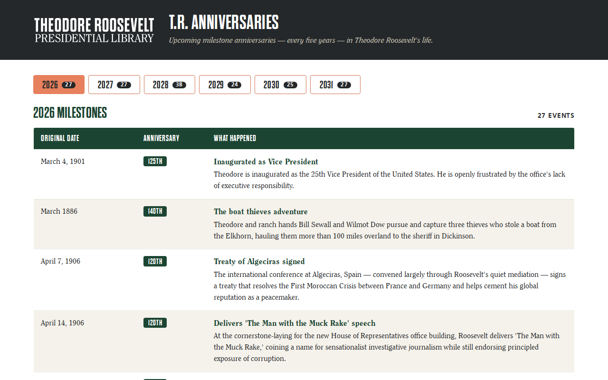
Content Tool
Anniversaries
Shows which milestones hit a round anniversary this year and the next five.
Static HTMLVanilla JavaScriptPlain JSONGitHub Actions -
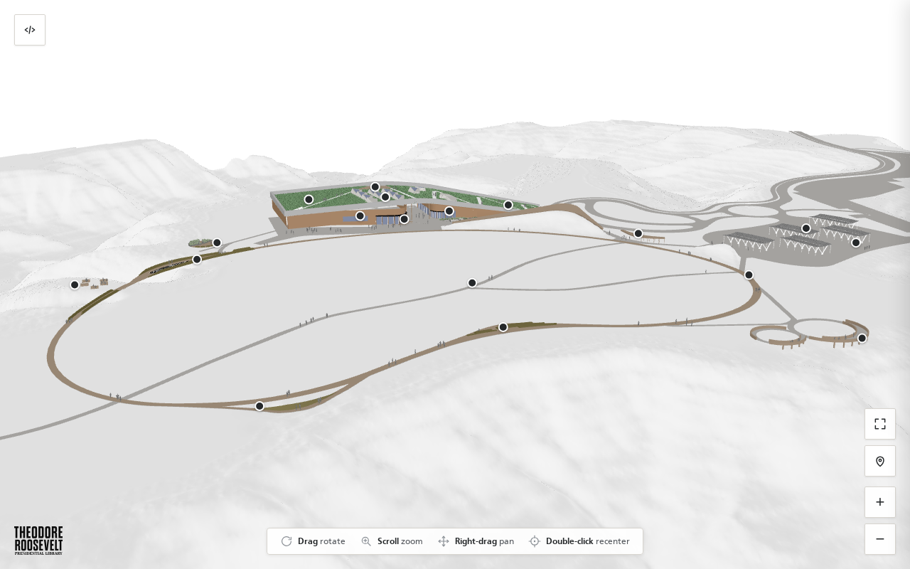
Visitor Experience
Campus Map
A 3D model of the campus you can spin, zoom, and pin with story markers.
Static HTML/CSS/JS, no build stepGoogle model-viewerglTF/GLB with Draco compressionGit LFS -
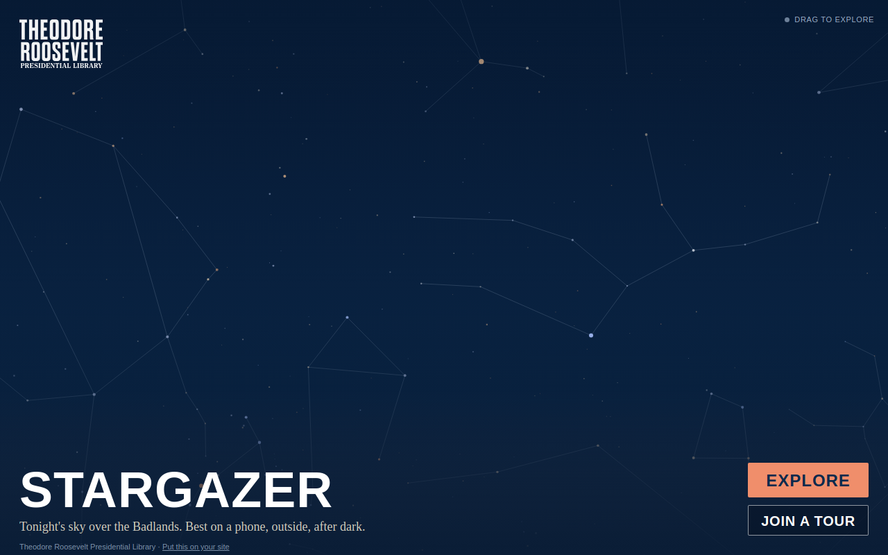
Vanilla JS built from source by a Python build stepShadow DOMd3-celestial dataStellarium sky-culture artwork -
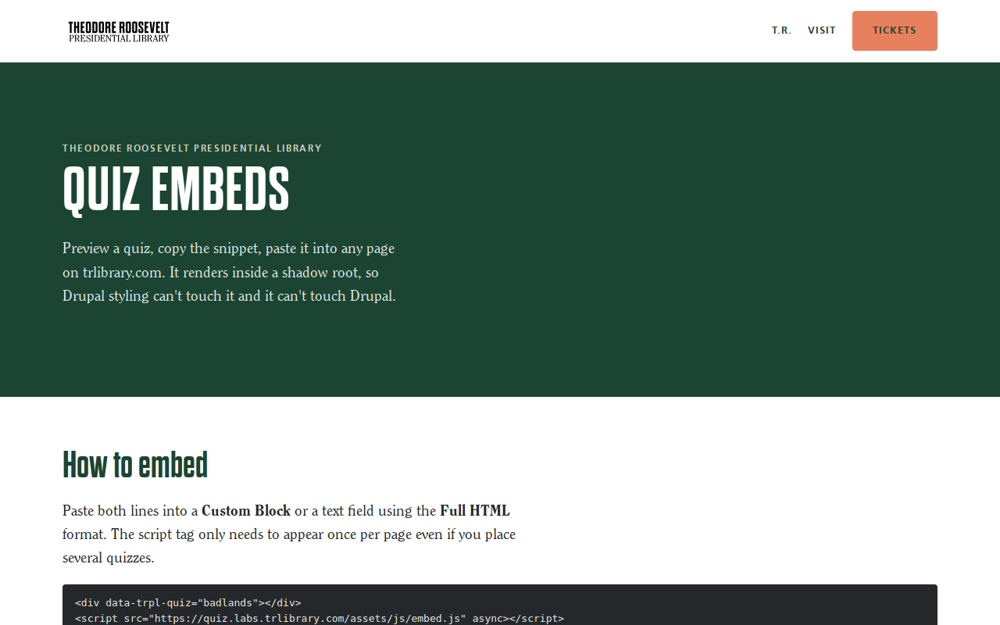
Static HTML/CSS/JS, no frameworkShadow DOMCanvas badge generationPeerJS / WebRTC -
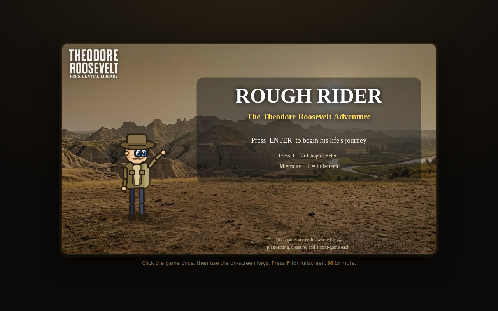
Interactive Media
Rough Rider
A ten-chapter 8-bit platformer that plays an entire life, mini-games and all.
Plain ES, no framework or bundlerHTML5 canvasWeb Audio APIFullscreen and Screen Orientation APIs -

Visitor Experience
Elkhorn Panoramas
Seven 360-degree panoramas that let anyone stand inside the Elkhorn Ranch ruins.
Static HTMLthree.jsPanolensWebGL -
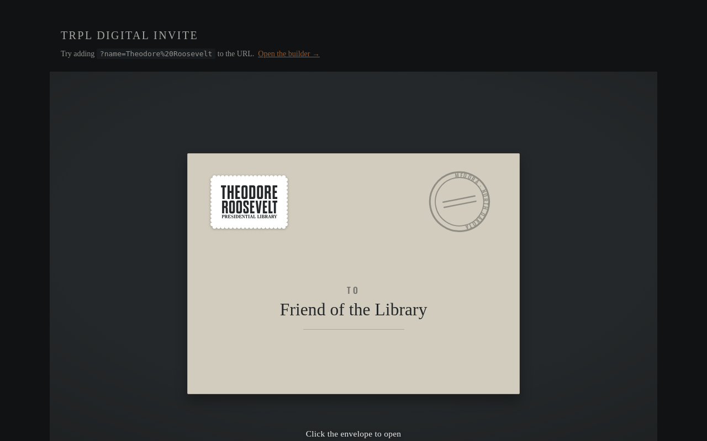
Content Tool
Digital Invitation
Turns any invitation image into an envelope that opens, addressed by name.
Single vanilla JS file, no dependenciesShadow DOMCSS 3D transformsprefers-reduced-motion
Nothing matches that
Try a broader word — “embed”, “dashboard”, “python” — or clear the filters.